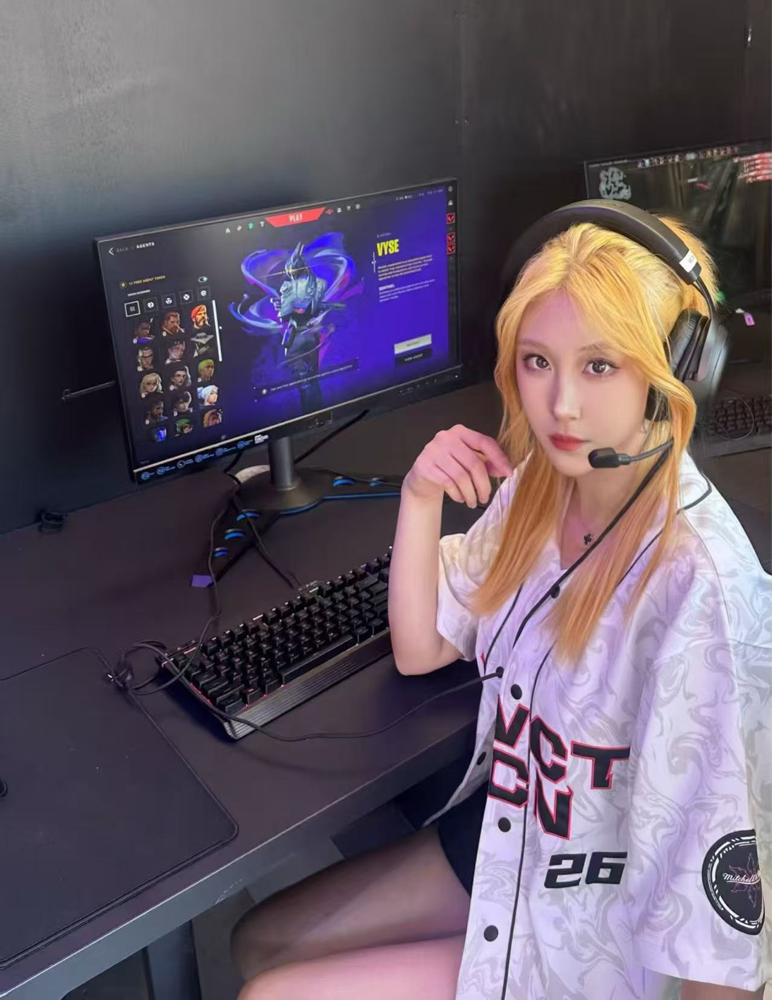
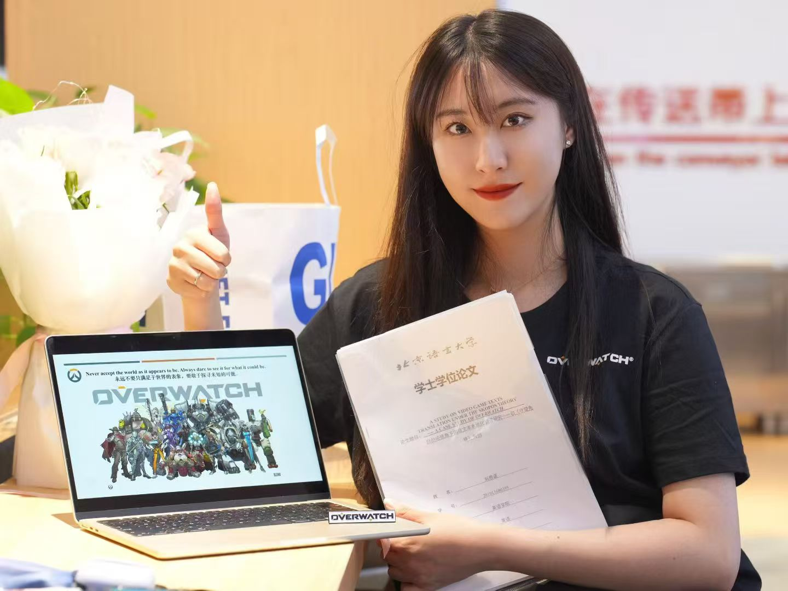
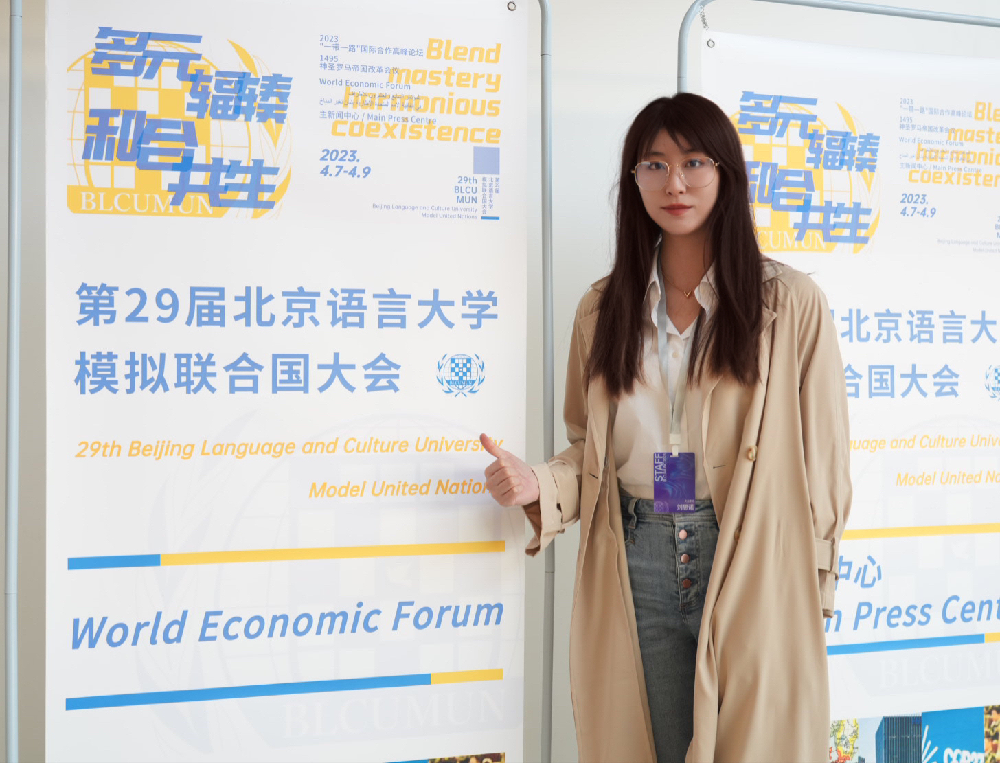

个人 档案
一个从语言与人文出发、最后走进电竞行业的人。翻译训练让我处理"信息如何准确传递"， 数字人文训练让我处理"信息如何被结构化"，而电竞现场让这两件事同时发生。

// VCT JERSEY · AGENT SELECT
刘思诺 Snow
目前在英雄电竞 CCI 项目中心担任赛事导演实习生，参与《王者荣耀》KPL 十周年年度庆典的内容策划； 同时在伦敦大学学院（UCL）攻读数字人文硕士。在此之前，我在外研社做过期刊编辑与新媒体运营， 在巴基斯坦使馆学校做过会议口译与双语主持。
我的求职方向非常明确：无畏契约电竞联盟运营——队伍与选手管理、赛事活动协同。 因为这是唯一一个能同时用上我"深度玩家身份 + 赛事执行经验 + 双语沟通能力"的岗位。
- 求职意向无畏契约电竞联盟运营｜队伍 / 选手管理｜赛事活动协同
- Base上海 · 北京 · 伦敦（可接受高频出差）
- Emailsnowliu0529@163.com
- Phone185 1938 5835
- GitHubSnowL365
教育 背景
数字人文 硕士（二硕在读）
主要课程：数据分析与可视化、图数据库、网页编程、数字化技术。 课程项目中独立设计 VCT 选手与俱乐部语义网，在数据库中录入选手信息， 明确联盟架构与选手转会关系。
汉英翻译 硕士
担任《Not Enough Time》游戏汉化项目负责人； 硕士论文研究《无畏契约》在中国市场的语言、文化与技术本地化。
英语语言文学 本科
英语专业八级（TEM-8）、英语专业四级（TEM-4）、雅思 6.5、普通话一级乙等。
证书 / 认证
- TEM-8英语专业八级
- TEM-4英语专业四级
- IELTS雅思 6.5
- 普通话一级乙等
校园 经历
// 制度、会务与现场执行的第一课



秘书处处长
负责校内模拟联合国大会的制度制定、人员协调、经费管理与现场执行， 形成了对流程规范与突发情况处理的基本方法论。
办公室主任
负责会议筹办、活动申请、文档管理及学代会会务， 参与起草学生会章程初稿，累计完成 20 余份活动策划案。
本科毕业论文
以《守望先锋》为个案，从目的论（Skopos Theory）切入分析游戏文本翻译策略—— 本科阶段就已经把「游戏」当成正经的研究对象。
专业 技能
联盟与赛事
熟悉 VCT 赛事体系、队伍结构、选手参赛流程及无畏契约职业生态，长期关注国内外赛区、俱乐部及赛训动态。
现场执行
熟悉执行台本、候场与上下场口、信息传递、流程衔接与风险点梳理。
工作适应
可接受境内外高频出差与高强度现场工作，具备主动推进和应急处理意识。
制度与文档能力
能够撰写赛事方案、执行流程、任务清单、会议材料及管理规范， 并将需求拆解至明确节点和责任人。曾参与学生会章程起草与管理材料撰写。
办公与数据
熟练使用 Word / Excel / PowerPoint，可制作流程表、策划案及执行手册； 可将数据库与编程语言融入日常工作。
中英双语
英语专业八级，具备中英双语写作、翻译、口译与主持能力； 可接受跨境出差，熟悉相关流程和手续办理。日语基础。
能力分布
// 自评，仅作能力权重参考
屏幕 之外
从模联的会场，到出版社的稿件，到 KPL 的红毯动线—— 我一直在做同一件事：把混乱的信息整理成一条能被执行的流程。 只不过现在，这条流程通向的是我真正热爱的赛场。 // LIU SINUO